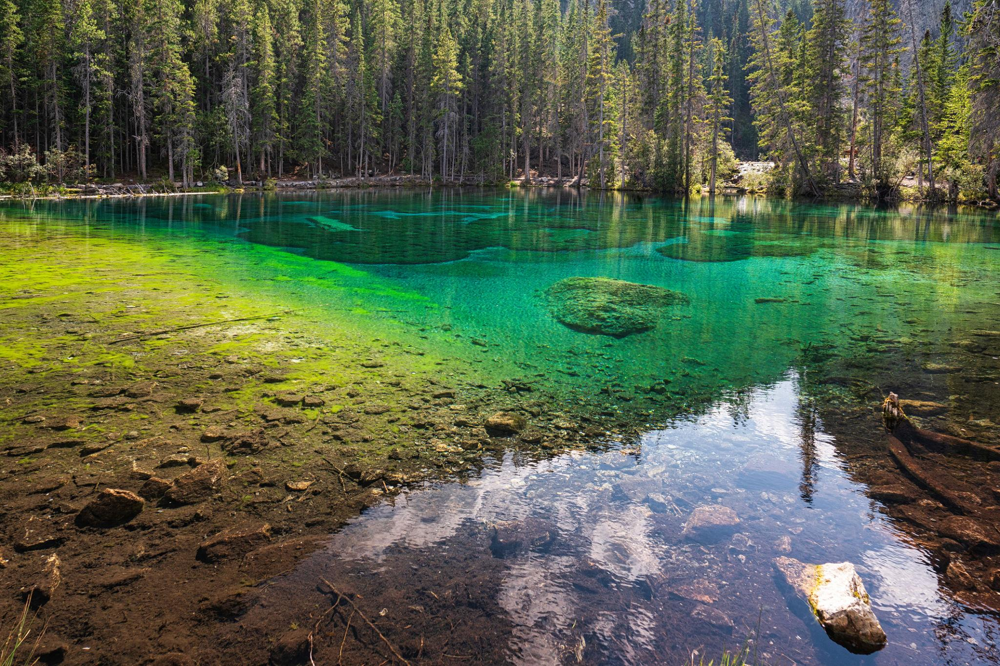

← 트래킹
🥾 Grassi Lakes
Canmore
⭐ 캔모어에서 가장 아름다운 에메랄드빛 호수를 만나는 가족 추천 트레킹

📅 우리 일정
Day 5 오전 (Plan B)
🏞 기대 풍경
💎 투명한 에메랄드빛 Grassi Lakes
🌲 울창한 숲길과 완만한 산책로
🪨 웅장한 석회암 절벽과 암벽등반 구역
🏔 캔모어와 로키 산맥 전망
📸 가족 여행 최고의 사진 명소
🗺 추천 동선
⬆️
Interpretive Trail
이용 (완만한 경사, 가족 추천)
📸 Grassi Lakes에서 충분히 휴식 및 사진 촬영
⬇️
Upper Trail
이용 (조금 가파르지만 내려오는 길이라 부담이 적음)
📏 기본 정보
🗺 추천 코스
Interpretive ↑
Upper ↓
🚶 걷는 거리
약 4km
⏱ 소요 시간
약 1.5~2시간
💪 난이도
쉬움
🚻 편의시설
✔ 주차장
✔ 화장실 (주차장)
✔ 전망대 및 휴식 공간
✔ 암벽등반 구역 관람 가능
🎒 준비물
👟 편한 운동화 또는 트레킹화
💧 물 500ml~1L
🧥 얇은 바람막이
🧴 선크림, 선글라스, 모자
📷 카메라
💡 여행 Tip
✔ 올라갈 때는 Interpretive Trail, 내려올 때는 Upper Trail을 이용하는 코스를 추천합니다.
✔ Interpretive Trail에는 폭포와 계단, 전망 포인트가 있어 올라가는 길이 더욱 재미있습니다.
✔ Grassi Lakes는 두 개의 호수가 있으며 물빛이 조금씩 달라 모두 둘러보는 것을 추천합니다.
✔ 오전이나 늦은 오후에는 비교적 한산하여 사진 촬영하기 좋습니다.
✔ 암벽등반 구역이 가까워 클라이머들의 모습을 구경하는 재미도 있습니다.
📍 Google Maps
🗺 트레일 지도
← 트래킹